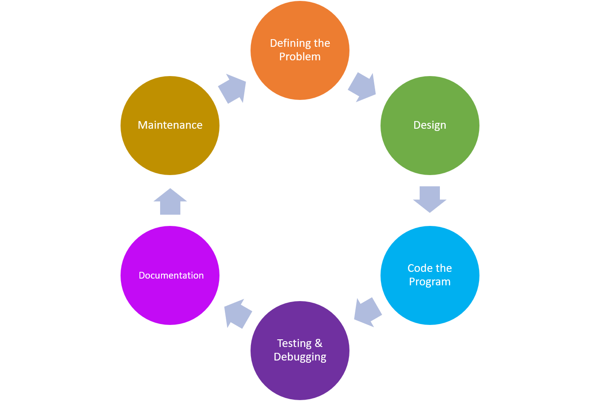

Software Development Life Cycle

- Define the problem
- This step involves gathering the requirements of the program needed to solve the problem.
- Questions that should be answered:
- What data do we need to process?
- How should we process the data?
- What output should the program deliver?
- How should the user interface look
- Design the program
- Program design focuses on breaking down the program into smaller, more managable components. Various tools are used to help design a program.
- Commonly used tools:
- Structure Charts
- Algorithm
- Flow Charts
- Decision Tables
- Pseudocode
- Code the program
- Once the program has been designed, a developer then writes the code.
- Coding often involves translating the design from charts and pseudocode into a specific programming language. Usually the language is chosen during the "defining" stage.
- Testing and debugging
- After code has been written this stage revolves around fixing any bugs in the program.
- There are two kinds of errors that cause bugs:
- Syntax Errors: These are like grammatical mistakes in the code.
- Logical Error: These mistakes might cause an other than intended output but the code still works.
- The programmer must fix these mistakes by carefully examining the already written code for errors.
- Documentation
- After coding has been completed, the programmer must write a manual that generally contains the following:
- An overview of the program's functionality.
- In-depth explainations of program features.
- Documentation of all commands.
- A thorough description of error messages generated by the program.
- Deploying and maintaining the program
- A software team will be responsible for fixing new errors and updating the software with new features.
- When a new feature should be added to the program, the cycle restarts as developers begin to define what problems the new features will solve.